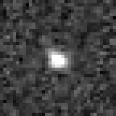

(7066) Несс
(7066) Несс (лат. Nessus) — небольшой кентавр. Он стал третьим открытым кентавром. Он обращается за пределами орбиты Сатурна.
Объект назван по имени персонажа древнегреческой мифологии — кентавра Несса. Причём название было предложено не астрономами, а астрологами. Название утверждено 22 апреля 1997 года.
Несс был открыт 26 апреля 1993 года Дэвидом Рабиновичем в рамках проекта Spacewatch в обсерватории Китт-Пик.
По данным телескопа Спитцер размеры Несса оцениваются в 60±16 км.
В культуре
В видеоигре Destiny 2 фигурирует астероид-кентавр Несс, выступающий в качестве одной из локаций. По истории мира Destiny, этот астероид был «механизирован» высокоразвитым инопланетным кибернетическим разумом — «Векс». Cами Вексы агрессивно настроены против игрока, а астероид наделён красивыми красочными пейзажами, флорой и фауной, на фоне выступающих в виде скал огромных компьютеров Вексов.
Примечания
- John Stansberry, Will Grundy, Mike Brown, Dale Cruikshank, John Spencer, David Trilling, Jean-Luc Margot (2007), Physical Properties of Kuiper Belt and Centaur Objects: Constraints from Spitzer Space Telescope, arΧiv:astro-ph/0702538 [astro-ph]
- Wm. Robert Johnston. List of Known Trans-Neptunian Objects. Johnston’s Archive (22 August 2008). Дата обращения 5 сентября 2008.
- JPL Small-Body Database
- John Stansberry, Will Grundy, Mike Brown, Dale Cruikshank, John Spencer, David Trilling, Jean-Luc Margot. Physical Properties of Kuiper Belt and Centaur Objects: Constraints from Spitzer Space Telescope. University of Arizona, Lowell Observatory, California Institute of Technology, NASA Ames Research Center, Southwest Research Institute, Cornell University (2007). Дата обращения 18 октября 2008.
Ссылки
- Несс в «Большой энциклопедии Кирилла и Мефодия»
- Nessus — Destinypedia
- Vex — Destinypedia